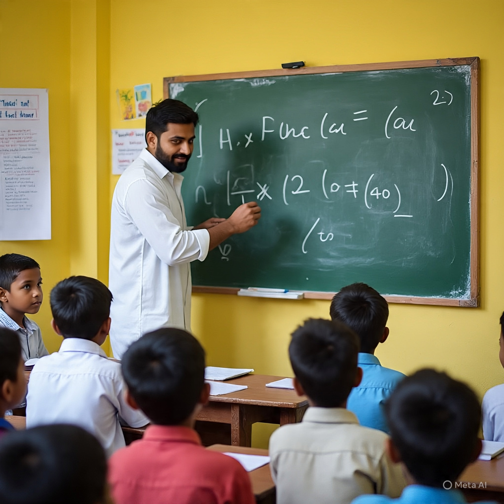

Ananya's Journey
"Volunteering with Lit Kiran has been incredibly rewarding. Seeing my students grow in confidence and skills makes every moment worthwhile."
Read Full StoryShare your time and skills to light up children's futures through education
Apply NowMake a meaningful impact while gaining valuable experience
At Lit Kiran, we believe that volunteers are the backbone of our organization. Your time and skills help us reach more children and create greater impact in their lives.
As a volunteer, you'll have the opportunity to make a direct difference in children's lives, gain valuable teaching and mentoring experience, and join a community of like-minded individuals.
.png)
Whether you can commit a few hours a week or several days a month, we have opportunities that can fit your schedule. We provide training and ongoing support to all our volunteers.
View OpportunitiesFind the perfect way to contribute based on your skills and interests
Teach core subjects to children in our partner schools. Options for both in-person and online teaching.
Time Commitment: 2-5 hours per week
Apply NowProvide guidance and support to students as they navigate their educational journey.
Time Commitment: 1-2 hours per week
Apply NowHelp implement and support our digital education initiatives in rural schools.
Time Commitment: Flexible
Apply NowTeach art, music, dance, or drama to help children express themselves creatively.
Time Commitment: 2-4 hours per week
Apply NowHelp organize events and campaigns to support our education programs.
Time Commitment: Flexible
Apply NowHelp translate educational materials or create content for our programs.
Time Commitment: Flexible
Apply NowHear from our volunteers about their experiences
"Volunteering with Lit Kiran has been incredibly rewarding. Seeing my students grow in confidence and skills makes every moment worthwhile."
Read Full Story
"Teaching math to these eager learners has been one of the most fulfilling experiences of my life. The gratitude from students and parents is humbling."
Read Full Story"As a mentor, I've not only helped my mentee academically but also seen her blossom into a confident young woman with big dreams."
Read Full StoryWhat we look for in our volunteers
All volunteers working directly with children will be required to complete a background check for child safety.
From application to making an impact - here's how it works
Answers to common questions about volunteering
The time commitment varies by role. Teaching volunteers typically commit 2-5 hours per week, while mentors commit 1-2 hours per week. Some roles like fundraising or content creation offer more flexible schedules.
While teaching experience is helpful, it's not required for all roles. We provide training and support to all our volunteers. What's most important is your passion for education and willingness to learn.
Yes! We offer several remote volunteering opportunities including online teaching, mentoring, content creation, and translation work. Our digital learning programs especially rely on remote volunteers.
There is no fee to volunteer with Lit Kiran. For in-person volunteering, you may need to cover your own transportation costs to our program locations.
All volunteers complete an orientation session and receive role-specific training. You'll also have access to ongoing support from our staff, teaching resources, and a community of fellow volunteers.
Absolutely! We welcome corporate groups, student organizations, and other groups to volunteer together. Group volunteering opportunities include school improvement projects, special events, and more.
Complete the form below to start your application
If you're not sure which volunteer opportunity is right for you, or if you have any other questions, we're here to help!